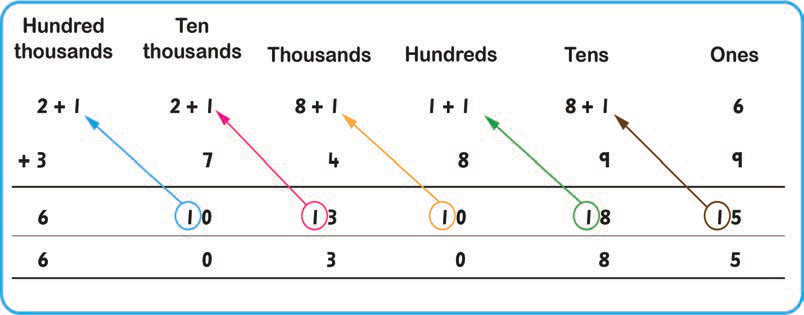

3. Add the hundreds: 1 + 1 + 8 = 10. Write 0 in the hundreds place. Regroup 10 hundreds into 1 thousands and shift it to the thousands place.
4. Add the thousands: 1 + 8 + 4 = 13. Write 3 in the thousands place. Regroup 10 thousands into 1 ten thousands and shift it to the ten thousands place.
5. Add the ten thousands: 1 + 2 + 7 = 10. Write 0 in the ten thousands place. Regroup 10 ten thousand into 1 hundred thousands and shift it to the hundred thousands place.
6. Add the hundred thousands: 1 + 2 + 3 = 6. Write 6 in the hundred thousands place.
Therefore, the answer is 603085.
This question can also be done by using the card number as follows:

Therefore, the answer is 603085.
Exercise 4
1.
6027
+ 1784
2.
57336
+ 12217
3.
48289
+ 3457